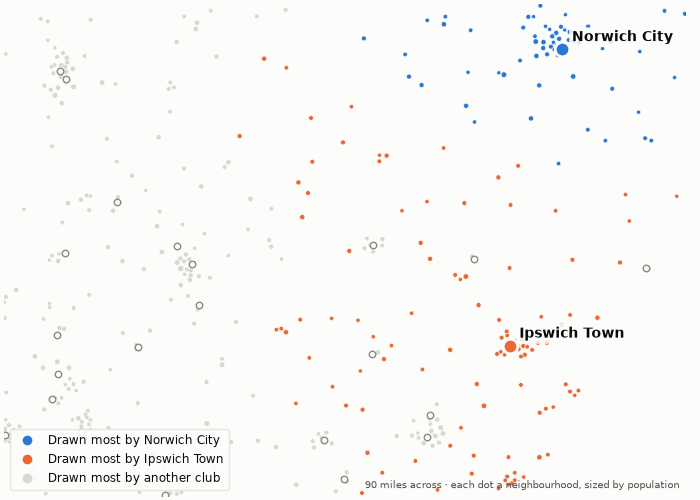
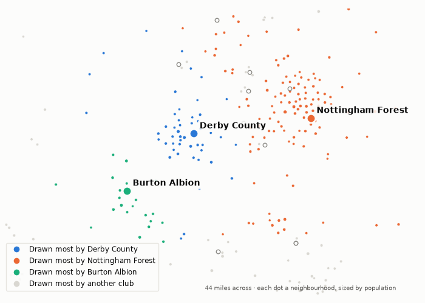
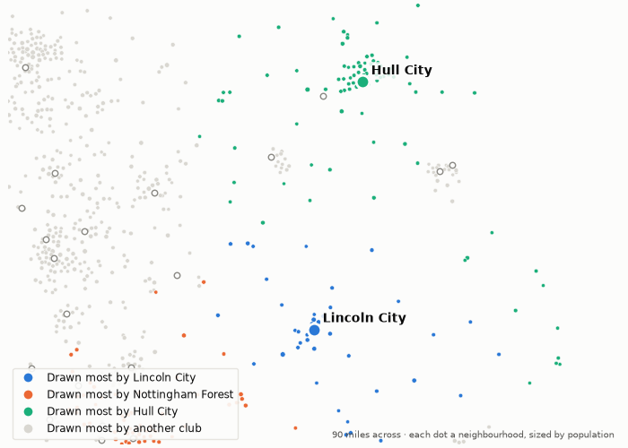

Whose people this week's clubs are playing for. 14 October 2026.
581,000 people live nearer to Norwich City's ground than to any other. Norwich City draw 68% of them; Southampton draw 0%. The next biggest draws are Ipswich Town (6%), Tottenham Hotspur (1%) and Arsenal (1%).
179,000 people live nearer to Southampton's ground than to any other. Southampton draw 79% of them; Norwich City draw 0%. The next biggest draws are Portsmouth (5%), Bournemouth (4%) and Eastleigh (2%).
They meet on Wednesday. On the map, each neighbourhood takes the colour of the club that draws most of it.

The model gives Derby County 557,000 people to draw on, the 34th largest market of the 112 clubs in the top five divisions. They sit 40th in the pyramid: 23rd in the Championship.
On their own doorstep, 310,000 people, they draw 78%. The next biggest draws are Nottingham Forest (6%), Burton Albion (3%) and Coventry City (1%).
They play QPR away on Wednesday.

The model gives Lincoln City 386,000 people to draw on, the 42nd largest market of the 112 clubs in the top five divisions. They sit 34th in the pyramid: 16th in the Championship.
On their own doorstep, 275,000 people, they draw 70%. The next biggest draws are Nottingham Forest (4%), Hull City (3%) and Leeds United (1%).
They play West Ham at home on Wednesday.

Modelled, not counted. A club's doorstep is the neighbourhoods nearer its ground than any other; every neighbourhood's people are split across all clubs by distance and division, as the divisions stand today. How catchment is measured.
Built from the English football database, tiers 1–5 from 1958/59. Results from football-data.co.uk. Archived copy.